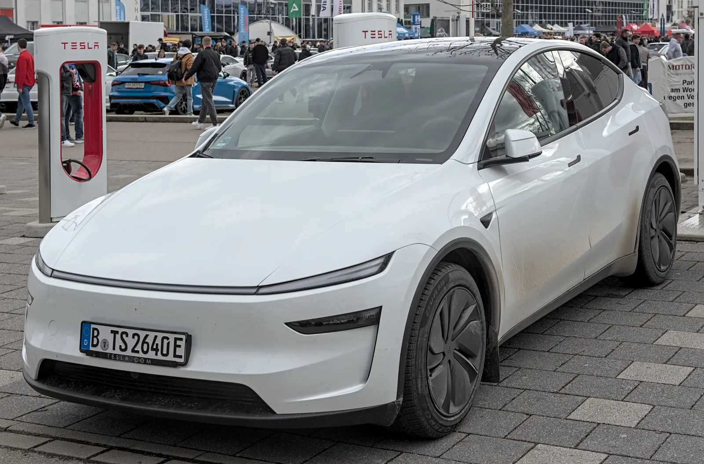
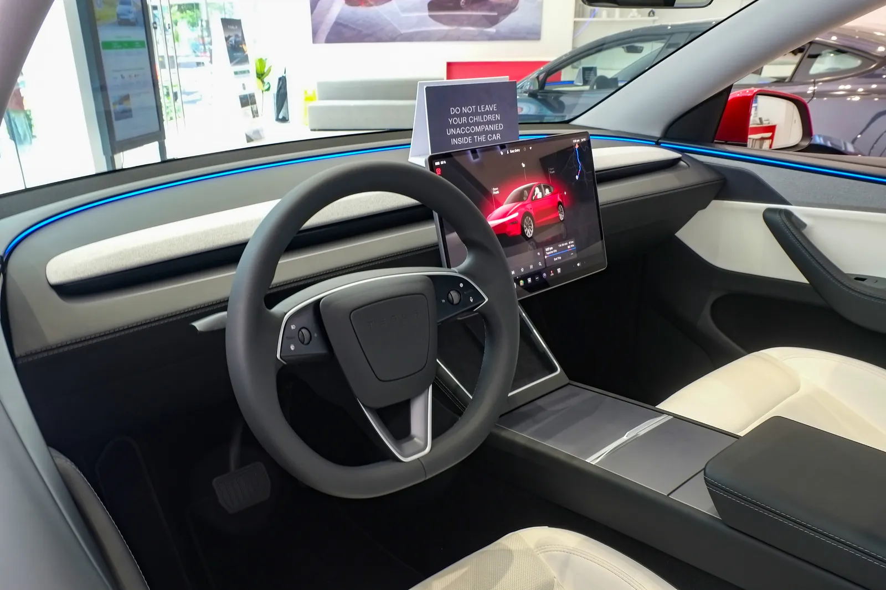
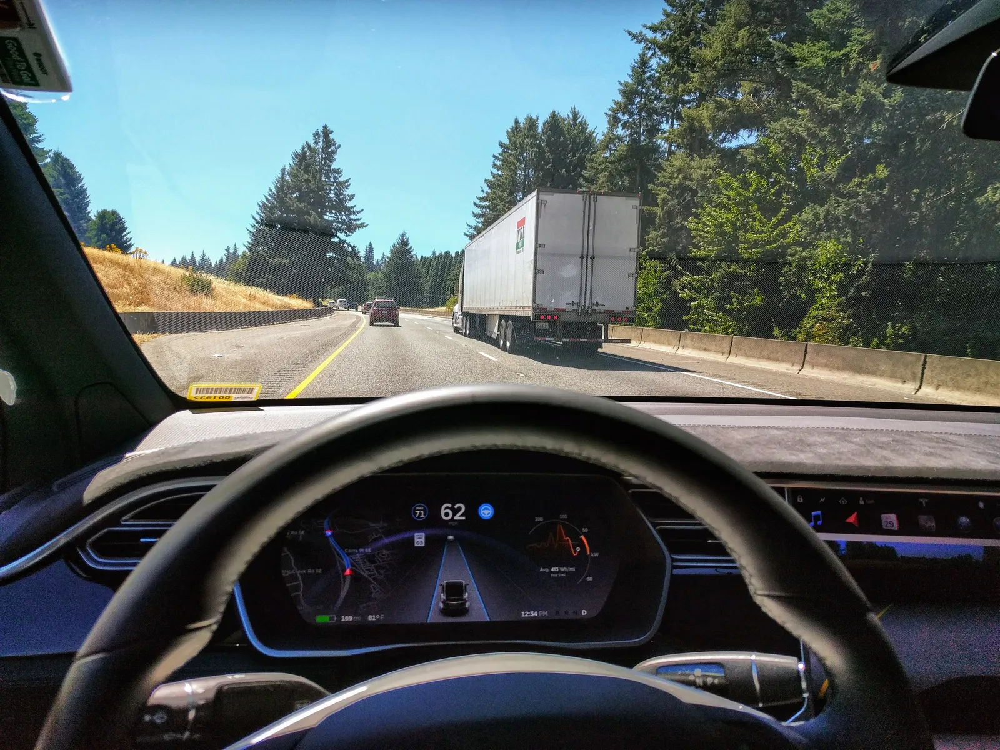
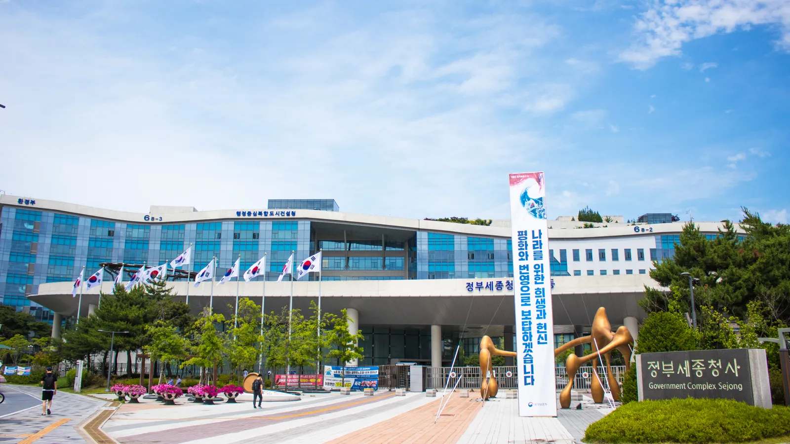

▲ 국내 등록 테슬라의 상당수는 중국에서 생산된 모델 3·모델 Y로, 이번 판정의 직접 영향을 받는다 ⓒ Wikimedia Commons
"방향지시등을 먼저 켜야 한다." 이 한 문장 때문에 테슬라의 자율주행 기능이 국내에서 발목이 잡혔다.
국토교통부가 2026년 8월 31일 테슬라의 감독형 FSD(Full Self-Driving)와 FSD V14 라이트에 대해 "현행 국내 자동차 안전기준에 부합하지 않는다"는 판단을 내렸다. 국내 도로에서 이미 켜져 있는 기능을 두고 나온 이례적인 부적합 판정이다. 더 눈에 띄는 대목은 따로 있다. 같은 테슬라인데도 미국산 차량은 계속 쓸 수 있고, 중국산 차량은 쓸 수 없다는 것. 왜 이런 차이가 생겼는지, 정확히 무엇이 문제인지를 짚었다.
1. 정확히 무엇이 "부적합" 판정을 받았나
국토교통부가 문제 삼은 건 FSD 전체가 아니라 '시스템 주도 차로변경' 기능이다. 테슬라의 감독형 FSD는 주변 교통상황과 내비게이션 경로를 스스로 판단해, 운전자의 별도 조작 없이도 차로를 바꿀 수 있다. 국토부는 이 방식이 국내 자동차규칙과 정면으로 충돌한다고 봤다.
대상은 두 가지다. 기존부터 판매된 감독형 FSD, 그리고 상대적으로 저렴한 요금으로 최근 출시된 FSD V14 라이트. 둘 다 일반도로에서 이미 활성화돼 실제 운행에 쓰이고 있었다는 점에서, 정부가 판매 전이 아니라 '이미 쓰이고 있는 기능'을 사후에 부적합 판정한 셈이다.

▲ 국토부가 부적합 판정을 내린 것은 FSD 전체가 아니라 시스템이 스스로 차로를 바꾸는 기능이다 ⓒ Wikimedia Commons
2. 왜 하필 '차로변경'이 문제였나
근거 조항은 자동차규칙 제89조 별표6의2 제10호다. 이 조항은 차로변경 보조 기능이 작동하려면 운전자가 먼저 방향지시등을 조작해야 한다는 전제를 깔고 있다. 즉 시스템은 운전자의 의사표시(방향지시등)를 확인한 뒤에야 차로변경을 보조할 수 있다는 구조다.
그런데 테슬라 FSD는 반대다. 시스템이 필요하다고 판단하면 방향지시등 여부와 무관하게 스스로 차로를 바꿀 수 있다. 이는 운전자 개입을 전제로 설계된 국내 기준과 근본적으로 다른 작동 방식이어서, 국토부는 이를 "규정 불일치"로 판단했다.
📍 국토부가 밝힌 판단 기준
국토부는 이번 판정과 관련해 "판단 기준은 생산 국가가 아니라 공식 인증 여부"라고 설명했다. 즉 중국산이라서 막힌 게 아니라, 해당 차량이 국내 안전기준 인증 절차를 거쳤는지가 관건이라는 취지다. 미국산 차량이 예외를 인정받는 것도 별도의 국제 협정에 따른 결과이지, 국가별로 차별하겠다는 의도가 아니라는 설명이다.
3. 미국산은 되고 중국산은 안 되는 이유
같은 테슬라 브랜드인데 원산지에 따라 결과가 갈리는 이유는 '한미 FTA'에 있다. 한미 자유무역협정에는 양국의 자동차 안전기준을 서로 인정해주는 상호인정 특례 조항이 있다. 이 특례 덕분에 모델 S·모델 X, 사이버트럭 등 미국에서 생산돼 국내 인증을 받은 차량은 감독형 FSD를 계속 쓸 수 있다.
반면 중국에서 생산되는 모델 3·모델 Y 등은 이 특례가 적용되지 않는다. 같은 안전기준이라도 상호인정의 근거가 되는 협정 자체가 없기 때문에, 중국산 차량에는 FSD가 공식적으로 배포될 수 없다는 것이다.
| 구분 | 대표 모델 | FSD 사용 | 근거 |
|---|---|---|---|
| 미국산 | 모델 S, 모델 X, 사이버트럭 | 사용 가능 | 한미 FTA 안전기준 상호인정 특례 |
| 중국산 | 모델 3, 모델 Y(상하이 생산분) | 사용 불가 | 상호인정 특례 미적용, 국내 기준 부적합 |
실제 영향은 작지 않다. 국내에 등록된 테슬라는 총 22만 9,311대인데, 이 중 18만 1,853대(79.3%)가 FSD를 쓸 수 없는 상태인 것으로 파악됐다. 국내에서 계획됐던 중국산 테슬라 차량의 FSD 확대 적용에도 당연히 제동이 걸린 상태다.
모델별로 보면 온도차가 뚜렷하다. 미국산인 모델 S·모델 X는 94.1%가 FSD를 사용할 수 있는 반면, 상하이 공장에서 생산돼 국내에 들여오는 물량이 많은 모델 3은 40.1%, 모델 Y는 9.6%만 FSD 사용이 가능한 것으로 집계됐다. 국내 판매량 대부분을 차지하는 모델 3·모델 Y일수록 오히려 FSD를 쓸 수 있는 비율이 낮은 구조인 셈이다.

▲ 자동조향 보조가 작동 중인 테슬라 계기판. 국내에서는 이런 시스템 주도 차로변경이 규정과 충돌한다 ⓒ Wikimedia Commons
4. 테슬라와 정부, 다음 절차는
이번 판정이 곧바로 "영구 금지"를 뜻하는 것은 아니다. 국토부는 향후 기준 개정이나 테슬라 측의 기능 변경을 통해 문제가 정리될 수 있다는 입장이다. 즉 테슬라가 국내 기준에 맞춰 시스템 주도 차로변경 기능을 운전자 개입 전제 방식으로 조정하거나, 정부가 국제 기준에 맞춰 규정을 손질하는 두 가지 경로가 모두 열려 있다.
실제로 정부는 UN R171(자동차 자동 차로변경 시스템 국제기준)을 반영한 새로운 운전자제어보조기술 제도 도입을 검토 중인 것으로 확인됐다. 2026년까지 자율주행 관련 법규를 대폭 개편한다는 큰 그림 아래, 레벨 3 자율주행 상용화 기준 명확화와 소프트웨어 중심 인증 체계, OTA(무선 소프트웨어 업데이트) 사후 관리 체계 등도 함께 정비될 예정이다.
✅ 국내 테슬라 오너가 헷갈리기 쉬운 점
· 완전히 못 쓰는 게 아니다 — 미국산 차량은 감독형 FSD를 정상적으로 계속 이용할 수 있다
· 차로변경 기능만의 문제 — 차선 유지, 어댑티브 크루즈 등 다른 운전자보조 기능까지 전면 금지된 것은 아니다
· 중국산이라고 무조건 안 되는 게 아니다 — 국토부는 "생산국가가 아니라 인증 여부가 기준"이라고 강조했다
· 일정은 미정 — 기준 개정이나 소프트웨어 조정이 언제 완료될지는 아직 공식화되지 않았다
5. 관전 포인트 — 그래서 언제쯤 풀리나
가장 현실적인 시나리오는 소프트웨어 쪽 조정이다. 테슬라가 국내용 FSD 로직에 "시스템이 차로변경을 제안하면 운전자가 방향지시등으로 최종 승인한다"는 식의 절차를 추가하면, 현행 규정과의 충돌을 피할 수 있다는 게 업계의 대체적인 시각이다. 다만 이는 테슬라의 자체 개발 일정에 달려 있어 정확한 시점을 예단하기는 어렵다.
정부 쪽에서는 UN R171 반영 제도 개편이 마무리되는 시점이 분수령이 될 전망이다. 국제 기준에 맞춘 새 운전자제어보조기술 제도가 도입되면, 시스템 주도 차로변경 자체를 조건부로 허용하는 근거가 마련될 수 있다.
국토교통부의 관련 정책 방향은 정부 공식 채널을 통해 확인할 수 있다. 국토교통부 홈페이지 바로가기

▲ 국토교통부가 위치한 정부세종청사. 자율주행 관련 법규 개편 작업이 이곳에서 진행 중이다 ⓒ Wikimedia Commons
6. 요약
국토교통부는 테슬라의 감독형 FSD와 FSD V14 라이트가 국내 자동차규칙(운전자의 방향지시등 조작을 전제로 한 차로변경 기준)에 부합하지 않는다고 판단했다. 시스템이 운전자 개입 없이 스스로 차로를 바꾸는 방식이 문제로 지목됐다.
한미 FTA 안전기준 상호인정 특례에 따라 미국산 차량은 계속 FSD를 쓸 수 있지만, 특례가 없는 중국산 차량은 사용이 불가능하다. 이 여파로 국내 등록 테슬라 22만 9,311대 중 79.3%가 FSD를 켤 수 없는 상태다.
정부는 UN R171을 반영한 새 제도 도입을 검토 중이며, 테슬라의 기능 조정이나 국내 기준 개정을 통해 문제가 풀릴 가능성이 열려 있다. 다만 구체적인 시점은 아직 공식화되지 않았다.